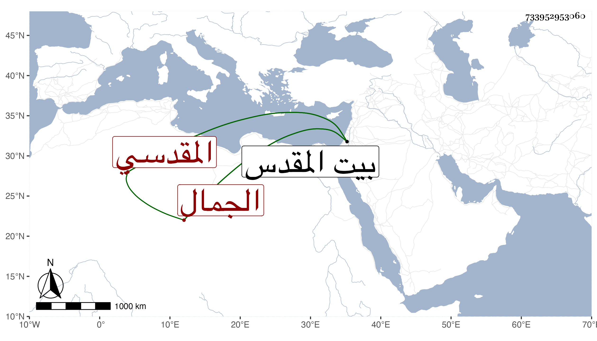

0902Sakhawi.DawLamic.ITO20230111-ara1.EIS1600.733952953060
Biography ID: 733952953060
1270
يوسف بن منصور بن أحمد الجمال المقدسي ويعرف بابن التائب . ولد سنة اثنتين وثمانين وسبعمائة ولزم الشهاب بن الهائم مدة وفضل وتنزل في الجهات واشتغل في العربية وعمل المواعيد وياقل أنه سمع الكثير على أبي الخير ابن العلائي وغيره وأجاز له جماعة فالله أعلم نعم سمع في سنة إحدى وثمانمائة على الشمس محمد بن إسماعيل القلقشندي الأول من مسلسلات العلائي بسماعه له على مخرجه وللمسلسل بالأولية المخرج فيه عاليا على الميدومي . ولقيته ببيت المقدس فقرأته عليه ويقال إنه من المنتمين لابن عربي وقد أذن له خليفة المغربي في التلقين سنة خمس وعشرين فلعله سلفه . مات في سنة خمس وستين تقريبا ببيت المقدس .
